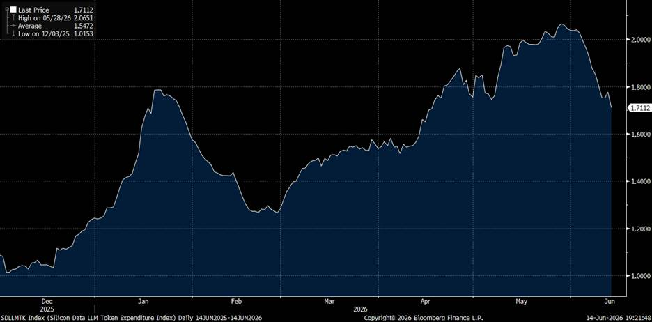
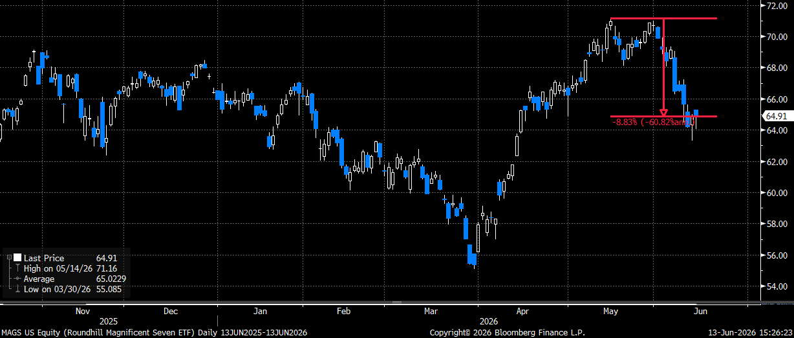
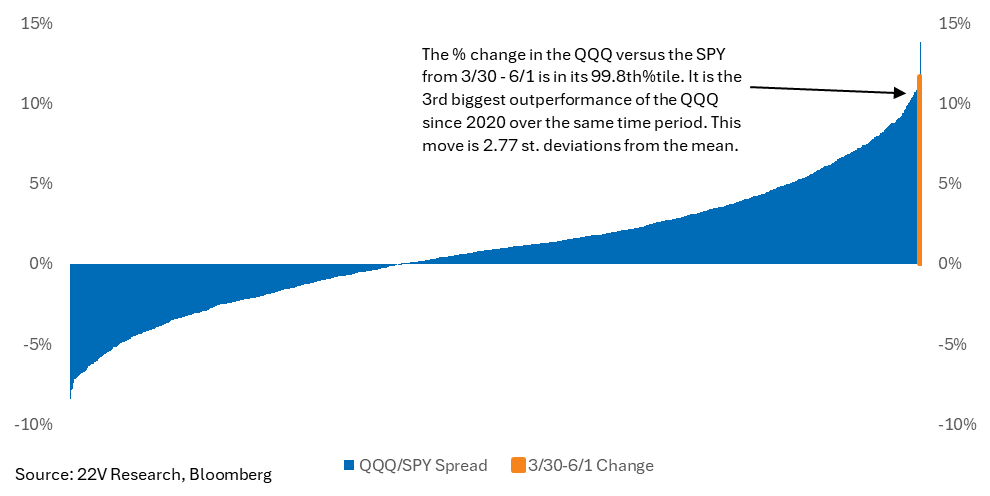

A60-Second Verdict
This is a useful agenda-setting email, not a single-action trade note.
- AI leadership is rotating: Jordi Visser argues the AI trade is not over, but is moving from hyperscalers and Mag 7 into downstream beneficiaries such as materials, chemicals, and selected infrastructure names.
- ENTG and ECL are the cleanest single-name research leads: Entegris is framed as a chemicals/materials beneficiary, while Ecolab remains tied to AI liquid cooling and lower oil input pressure.
- Regional banks are source context only: Rene rejected KRE/USB as a workflow action because he does not want regional US banks from this signal.
- QQQ options are rejected for action: use the call-skew point as market context only; no QQQ options work item should be created from this digest.
Processor Decision
BSignal Scorecard
Maturity Sliders
CBasic Information
| Field | Value |
|---|---|
| Title | 22V Daily: Visser, Roque, Hebel, Peterson, Jacobson, and weekly recap links |
| Sender | Mark Whaling, 22V Research |
| Received | 2026-06-15 15:32:36 Europe/Zurich |
| Message ID | <CH2PR03MB53011A3860E39E033AF7F7D5C5E62@CH2PR03MB5301.namprd03.prod.outlook.com> |
| Processed content | Email body, embedded summaries, and extracted chart images. |
| Not processed | Linked web/PDF reports and webinar video were not opened in this run. |
DContent Extraction
| Signal | Plain-English Explanation | Initial Route |
|---|---|---|
| AI mid-cycle slowdown | The AI theme may become choppier because investors are already positioned for growth while growth acceleration slows. This favors select beneficiaries instead of broad hyperscaler exposure. | Thesis update |
| ENTG | Entegris is highlighted as a chemicals/materials company that may benefit from rising semiconductor and AI infrastructure complexity. | Watchlist candidate |
| KRE and USB | Regional banks are favored by the source, but Rene rejected regional US banks as an action route for this workflow. | Context only |
| ECL | Ecolab remains a liquid-cooling and lower-input-cost candidate, reinforced by a near-term CoolIT acquisition catalyst. | Existing watchlist support |
| QQQ call skew | QQQ upside options look expensive compared with SPY/IWM. This remains market-structure context, not an options action. | No action |
EContent Evaluation
| Dimension | Assessment | RAG |
|---|---|---|
| Plausibility | High. The rotation thesis is internally consistent and supported by both macro and technical framing. | Green |
| Evidence strength | Medium-high. Email includes summaries and charts, but full linked reports were not processed. | Amber |
| Decision readiness | Medium. Ready for research agenda and watchlist changes, not for immediate trade execution. | Amber |
FInvestment Impact
| Area | Impact | Confirmation Score | Implication |
|---|---|---|---|
| AI infrastructure thesis | Confirms that AI exposure should broaden beyond hyperscalers into physical infrastructure and specialty suppliers. | 8/10 | Add ENTG as a research candidate; keep ECL active. |
| Cyclical allocation | Supports tactical cyclical broadening as source context if oil/geopolitical shock risk fades. | 7/10 | Do not pursue KRE/USB regional-bank work from this signal. |
| Mag 7 / QQQ exposure | Raises caution on expensive upside concentration in mega-cap tech. | 6/10 | Do not create a QQQ options action from this signal. |
GConcrete Actions
Tag it as AI materials / chemicals / Vera Rubin complexity.
This email reinforces the earlier lower-oil and liquid-cooling thesis.
Rene rejected the KRE/USB route because he does not want regional US banks in this workflow.
Rene rejected QQQ options action; the options skew remains source context only.
HDetailed Appendix For Understanding
This appendix is written so each heading summarizes the paragraph. It is intended to replace reading the original daily email unless a specific action is selected for deeper work.
Chart Pack



The main message is rotation, not AI failure.
The email argues that the AI trade is entering a more selective phase. This means the broad "own the winners" approach may give way to more specific beneficiaries: materials, chemicals, infrastructure suppliers, and companies paid by the AI build-out rather than companies paying for it.
ENTG is a new research candidate because AI complexity can increase materials intensity.
Entegris is framed as a beneficiary of increasing semiconductor and AI system complexity. In simple terms: as chips, packaging, memory, and data-center systems become harder to manufacture, specialized materials and chemicals can become more important.
ECL remains relevant because liquid cooling is becoming a physical bottleneck.
Ecolab is not a pure AI company, but the 22V framing makes it relevant to the AI infrastructure chain. If data centers need more liquid cooling, Ecolab's water and cooling exposure becomes more strategically interesting.
Regional banks were considered and rejected for Rene's workflow.
KRE and USB are highlighted by the source because lower geopolitical and inflation shock risk can help cyclical assets. Rene rejected regional US banks as an action route here, so this remains source context only.
ISource Handling
Recorded from Apple Mail mailbox Research Signals - New. The email was moved to Research Signals - Processed after signal capture. Obsidian note created at DragonShield Research Obsidian/01 Signals/2026/2026-06/2026-06-15 22V - AI Rotation Regional Banks ECL And QQQ Calls.md.